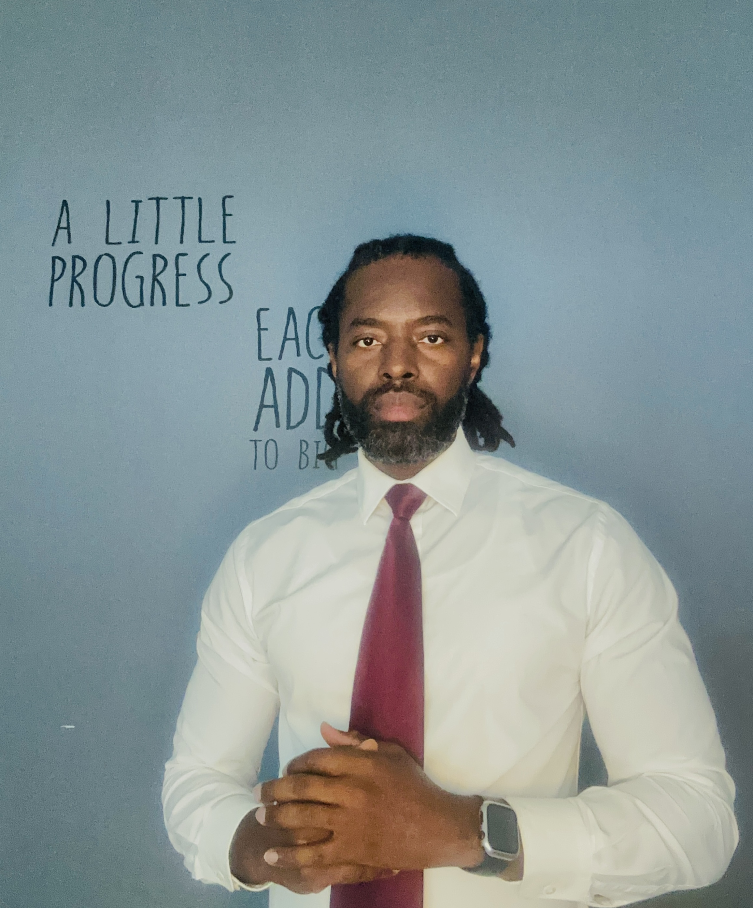

Davidson Pierre

Summary
Dynamic and dedicated professional with a recent completion of the boot camp program at The Academy Florida and achievement of AZ-204 certification.
Proficient in Azure development as a Microsoft Azure Developer Associate, and possess excellent customer service skills.
Proven ability to deliver exceptional service while maintaining strong interpersonal relationships.
Recently completed my Web development BootCamp program that helped me to become very proficient in HTML, CSS, and JavReaScript for front-end development.
I am also proficient with back-end technologies like databases, server-side languages, and APIs. I have learnt how to use frameworks and libraries,
ensure website responsiveness and accessibility , and implement security meaures, debugging and version control skills.
Eager to contribute expertise in both technical and customer-facing roles.
Education
Bachelor's of Business Administration in Finance
Florida International Univerity, Miami, FL
Application Architect Program/Full Stack Web Developer
Academy Florida Miami, FL
Professional Experience
Agency Owner/Producer - SubellaChris Insurance Agency LLC
August 2020 - Present
- Managed business operations to generate sales leads through
networking and referrals, resulting in 50% increase in client base over
three year period
- Designed and conducted comprehensive insurance needs assessments
to customize coverage plans for individual clients which led to 40%
increase in customer retention
- Consistently exceeded monthly sales targets by negotiating terms to
close high-value sales that grew monthly profit margin by 15%
- Collaborated with underwriters to secure competitive quotes and
negotiate favorable terms for client thus raising customer satisfaction by
60% within 3 years
- Adopted deployment of different CRM software to maintain detailed
client records, track communications, and streamline follow-up,
resulting in increased productivity 45%
- Provided exceptional customer service by promptly addressing
inquiries and resolving policy-related issues which produced more
word of mouth referrals
Student of Application Architect program/Full Stack Web Developer - The Academy Florida
January 2023 - June 2023
- Proficient in designing, building, testing, and maintaining cloud solutions on Microsoft Azure operations
- Skilled in developing applications and services using Azure tools and technologies, including Azure app Service, Azure Functions, and Azure Storage
- Experienced in implementing authentications using Azure Active Directory
- Proficient in integrating Azure services with other third-party services and on-premises resources
- Knowledgeable in deploying and managing containers on Azure Kubernetes Service (AKAS) and Azure Container instances (ACI)
- Familiar with Azure DevOps for continuous integration and continuous deployment (CI/CD) pipelines
- Capable of monitoring and optimizing Azure resources for performance, scalability, and cost-efficiency
- Strong understanding of Azure solutions architecture and best practices for cloud development
Web Development BootCamp - UDemy - Instructor: Dr. Angela Yu
January 2024 - July 2024
Technichal Skills:
- HTML, CSS, JavaScript, SQL
- React, Node.js, Express, Bootstrap, jQuery
- Tools and platforms: Git, GitHub, Webpack, Heroku, Netlify, VS Code.
- Databases: MongoDB, PostgresSQL
- Other: RESTful APIs, Agile methodologies, Responsive Design, Cross-Browser Compatibility
Cruise Vacation Specialits - Carnival Cruise Lines
March 2007 - June 2020
- Executed targeted sales strategies, by implementing targeted script for
different classification of clients thus driving 35% increase in cruise
- Effectively communicated unique features and benefits of various cruise
options to meet diverse client preferences
- Cultivated and maintained strong relationships with clients by making
monthly follow up calls which heightened repeat business by 40%
Azure Web Developer Skills
- Develop Azure compute solutions
- Develop for Azure storage
- Implement Azure security
- Azure Blob Storage
- Monitor, troubleshoot, and optimize Azure solutions
- Organizational Skills
- Time Management
Awards and Certifications
- AZ-204
- Top Sales Agent of the Year:
2010, 2012, 2015, 2018
- Considering it Done:
2013, 2014, 2016
Other
{kind=link}